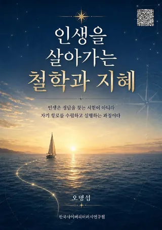

Strategy and humanities
Use classic works of strategy and contemporary essays to examine judgement, evidence and responsibility at work.
Management strategy
Read a chapter of Sun Tzu to identify the conditions behind a decision. Use the Thirty-Six Stratagems to consider alternative explanations or courses of action, then test them against evidence in the SWOT case study.
The lists below retain the chapter order and original Chinese titles. The English questions are KCLI study prompts for organisational decisions.
Sun Tzu in 13 chapters
1. Planning 計篇
What are the objective, external conditions, leadership responsibilities and decision criteria?
2. The cost of action 作戰篇
What resources does a prolonged project consume, and what would justify continuing it?
3. Strategy before action 謀攻篇
Can a change in incentives resolve the problem before you commit more resources?
4. Position and readiness 軍形篇
Which capabilities can the team build now, regardless of external events?
5. Organising effort 兵勢篇
How can roles, routines and timing help the team coordinate its work?
6. Strengths and gaps 虛實篇
Where do capacity and demand diverge? What evidence would confirm the gap?
7. Coordination 軍爭篇
Which handovers and dependencies must be visible to everyone involved?
8. Adapting the plan 九變篇
What change in conditions would trigger a different decision?
9. Observing the situation 行軍篇
What did you observe directly, and what still depends on interpretation?
10. Understanding the terrain 地形篇
How do geography, markets, organisational structures or access affect the choices available?
11. Different situations 九地篇
Which constraints change when a project moves to a new setting?
12. Consequences of escalation 火攻篇
What downstream harm could follow an irreversible decision?
13. Sources of information 用間篇
How will you verify who supplied the information, its currency and its reliability?
The Thirty-Six Stratagems
Open a group to compare six interpretations of what can influence judgement during planning, negotiation or change.
1–6 · Working from strength
- Routine can hide change 瞞天過海
Which recurring activity deserves a fresh review?
- Indirect relief 圍魏救趙
Which dependency could be adjusted to relieve a bottleneck?
- Third-party leverage 借刀殺人
Whose interests would an intermediary be serving?
- Wait for the right time 以逸待勞
When would waiting improve the evidence available?
- Instability and opportunity 趁火打劫
Who could be disadvantaged by a decision made during disruption?
- Diversion 聲東擊西
Which issue has gone unexamined while attention is elsewhere?
7–12 · Working through disagreement
- Appearances and reality 無中生有
What independently verifiable evidence supports the claim?
- An alternative route 暗渡陳倉
What other route could achieve the same business objective?
- Observe before intervening 隔岸觀火
What would justify intervention in a dispute?
- Courtesy and competing interests 笑裏藏刀
How will you recognise a conflict of interest in a friendly partnership?
- Accepting a limited loss 李代桃僵
Which trade-off can be justified transparently?
- Small opportunities 順手牽羊
What small improvement is available within the agreed scope?
13–18 · Taking the initiative
- Test an assumption 打草驚蛇
What low-risk pilot would reveal how the process really works?
- Reuse an existing structure 借屍還魂
Which part of an earlier programme could serve a new purpose?
- A change of setting 調虎離山
Would a different setting help everyone examine the issue?
- Give a decision space 欲擒故縱
Could extra time improve the decision and the quality of consent?
- Invite a more useful contribution 抛磚引玉
What draft would give reviewers something concrete to improve?
- Find the pivotal dependency 擒賊擒王
Which decision or approval governs the outcome?
19–24 · Deciding under uncertainty
- Remove the underlying cause 釜底抽薪
Which input keeps the problem recurring?
- Clarity during uncertainty 混水摸魚
How can owners make transactions traceable during change?
- A planned transition 金蟬脫殼
How will responsibilities be handed over when a project closes?
- Define the boundary 關門捉賊
Which limits keep corrective action proportionate?
- Partnerships across distance 遠交近攻
Which local and regional partners bring complementary knowledge?
- Terms of access 假道伐虢
What permissions, duration and responsibilities have been agreed?
25–30 · Working alongside partners
- Hidden substitutions 偷梁換柱
How will reviewers detect a material change in a proposal?
- Indirect feedback 指桑罵槐
How can concerns be heard without exposing individuals?
- Appearances of capability 假痴不癲
Which demonstration would verify actual competence?
- An exit route 上屋抽梯
Can participants withdraw without unfair consequences?
- Presentation and substance 樹上開花
Which claims in a polished proposal are backed by evidence?
- A change of role 反客爲主
When might a participating organisation become the decision-maker?
31–36 · When resources are constrained
- Bias from personal appeal 美人計
Would an independent reviewer reach the same conclusion?
- Confidence and uncertainty 空城計
What supports a confident public statement?
- Conflicting accounts 反間計
Which independent evidence could reconcile two accounts?
- Costly signals 苦肉計
Does a visible sacrifice actually establish the promised commitment?
- Linked decisions 連環計
Which linked decisions magnify one another’s effects?
- Withdrawing responsibly 走爲上
At what point should a team pause, exit or redesign its approach?
Human judgement in the age of AI
An AI recommendation reflects what its inputs can measure. Philosophy asks which outcomes matter and whose experience might be missing. Explaining a decision to the person affected is one way to test that reasoning.

Philosophy and Wisdom for Living
In this collection, KCLI director Myeongseop Oh reflects on choices made at sea and in everyday life. Part Four considers how to turn knowledge into personal judgement and action in the age of AI.
Published by KCLI in Korean. The title above is an English rendering.
Publisher listing and contents at YES24 (Korean)A question for discussion
A training coordinator uses an AI recommendation to select a learner for supplementary training. What would you ask the learner about their experience before acting on their login history? How would you explain the final decision?
Explore accountability in AI systems